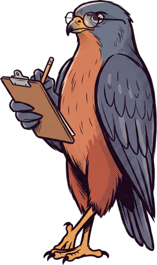

Names are now links: click any agent, manuscript title or query row in the mock and the line under it says where it goes. One voice is in. The switches numbered 1 to 5 are the further improvements on offer, each set to the choice I’d make; flip any of them to see the alternative. “As built” shows the feed as it is on the branch. Click a collapsed card to open it.

Click a name, a manuscript title or a query row to see where it goes.
On purpose, but it clearly didn’t read that way. One voice made every row in the list serif. Inside an open card I had left three things in the typewriter face: the headline (the rulebook’s card heading is Special Elite 20), the figures and the journey labels. Switch 2 lets you take those out.
Checked against the settled design rules in CLAUDE.md (consistency rulings v2 to v4). One voice fixes every row of this table, whatever the switches say.
| Rule | The feed as built | In One voice |
|---|---|---|
| Body text is 16 or 14 | Row sentences 14.5, sub-lines 13, card name 15.5 | Sentences and names 16, sub-lines 14 |
| Nothing under 12 | Times 11.5, journey labels 11.5, journey dates 11 | All 12 |
| Two muted colours only | Times in two paler greys (#a39a91, #8a8178) | Times in the caption colour, #6b6058 |
| Two weights: regular and semibold | Names and the day in bold (700) | Semibold (600) |
| Card heading is Special Elite 20 | Open card headline 21, its figures 19 | Both 20 |
| Small outline button | "Open query" at 13 with a grey edge | 14, navy edge and text, radius 8 |
| Nothing cut off | Collapsed headline stops after two lines | Wraps in full |